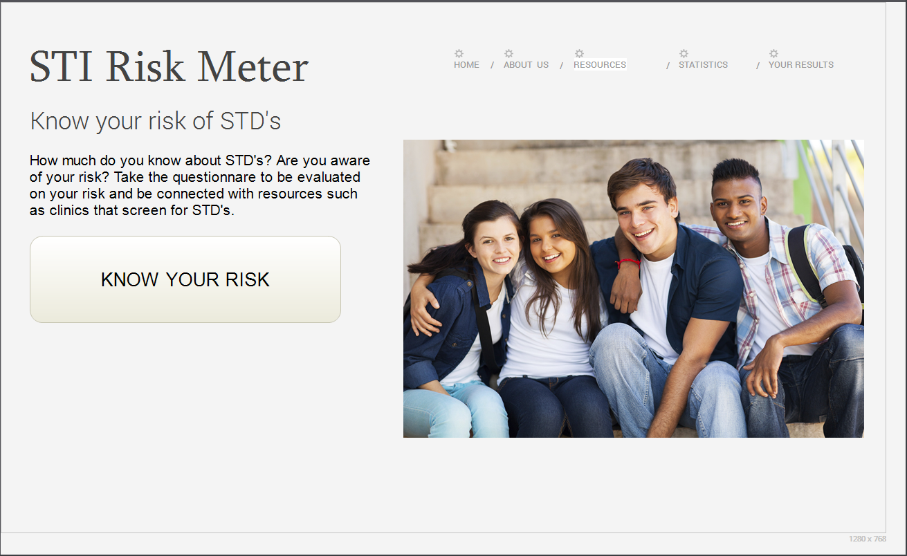

Risk-O-Meter
Know your risk of STDs
Toggle navigation
Risk-O-Meter
Home
About
Statistics
Questionnaire
Resources
Public Health Services
Another action
Something else here
Nav header
Separated link
One more separated link
